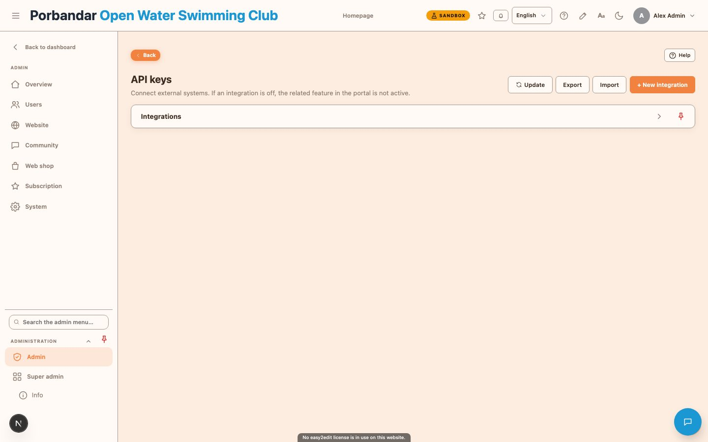
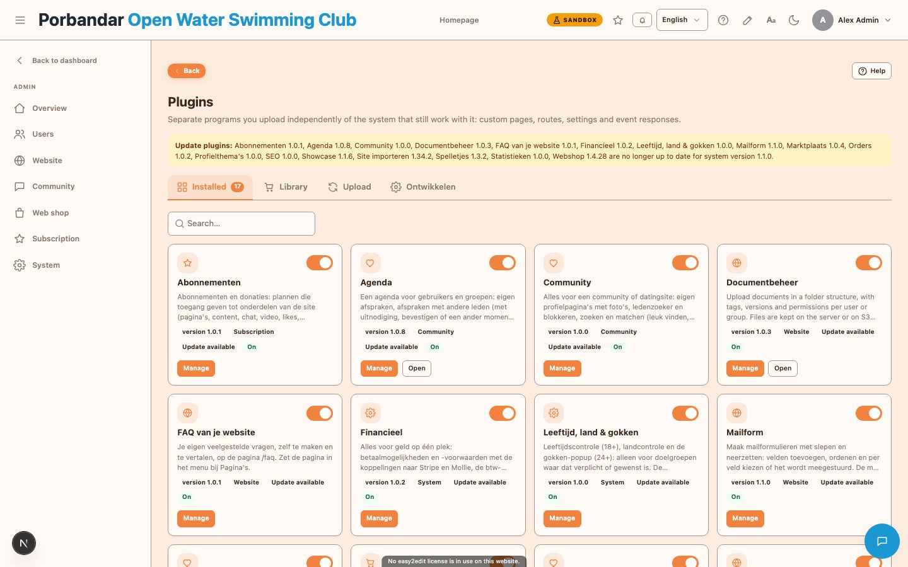
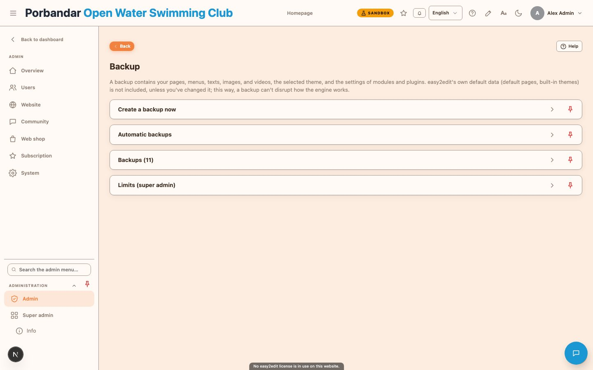
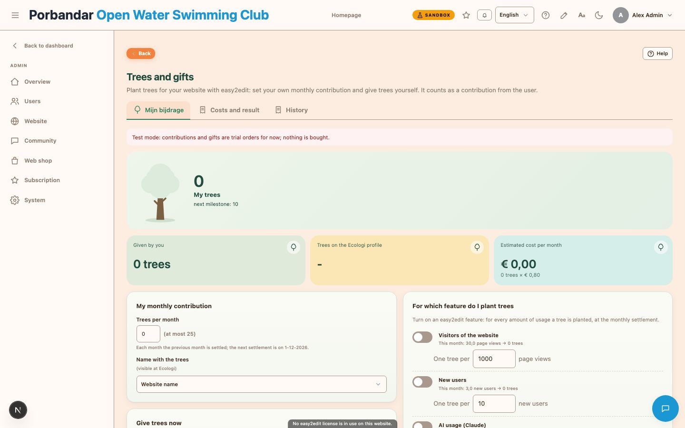
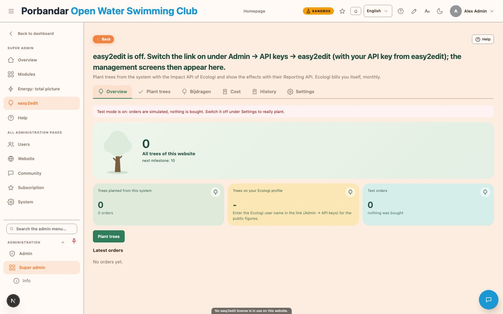
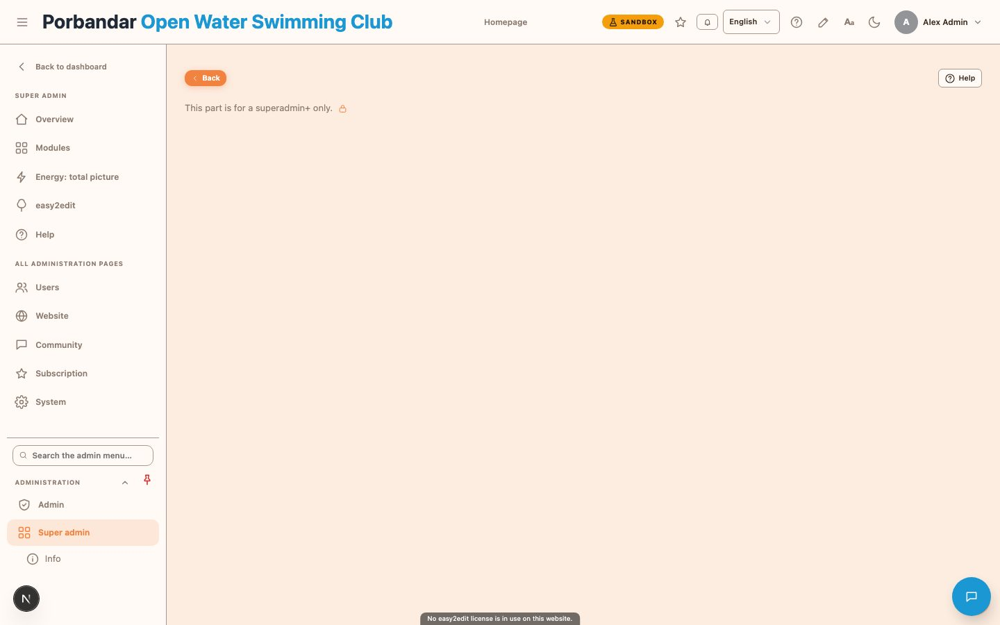

11. Plugins, back-ups, licentie en implementatie
Dit hoofdstuk legt uit hoe je plugins beheert, je site beschermt met back-ups, je licentie en prijzen begrijpt, en easy2edit implementeert en onderhoudt, inclusief de ingebouwde boom-plant-functies van het systeem.
Video: Back-up en terugzetten (Nederlandse voice-over ook in English)
Video: Plugins en licentie (Nederlandse voice-over ook in English)

Plugins#
Plugins worden beheerd vanuit Admin > Plugins. Het zijn ondertekende pakketten die worden opgeslagen in /plugins en kunnen worden geïnstalleerd vanuit de bibliotheek (resource/plugins), aan- of uitgezet, en bijgewerkt.
Een plugin kan eigen pagina's, modules, vertalingen (44 talen) en adminschermen meebrengen. Als een plugin demo content heeft, toont de pagina ervan in Admin > Plugins (tab Overzicht) een knop:
- 'Maak demo content' wanneer er nog geen demo content bestaat.
- 'Verwijder demo content' zodra deze is aangemaakt, zodat jij die weer kunt weghalen.
Het resetten van het systeem verwijdert ook eventuele demo content.
De module API keys staat altijd aan in elke standaardinstallatie. De superadmin-koppelingen (AI, Stripe, mail, opslag) worden automatisch aangezet wanneer een installatie wordt opgezet, zodat ze blijven werken, maar de geheime sleutels zelf worden nooit opgeslagen in het installatiebestand. Een link gemarkeerd als Superadmin-koppeling is alleen zichtbaar en bewerkbaar voor superadmins.
Het resetten van het systeem (Super admin > Systeem > Resetten) vraagt of AI-gegevens in de database ook verwijderd moeten worden, oftewel alle AI-aanroepen met kosten plus de credit-geschiedenis en credit van superadmins (de AI-instellingen zelf blijven behouden). Het credit van normale gebruikers verdwijnt automatisch wanneer die gebruikers worden verwijderd.

Een site importeren#
Met Admin kun je een andere website importeren vanaf een adres, map, ZIP-bestand of een los HTML-bestand, waarbij het thema, de pagina's, de startpagina, iconen en afbeeldingen worden meegenomen. Wanneer je een los HTML-bestand importeert, bouwt Claude het thema, de pagina's en de content, en zet de benodigde modules aan. Een geïmporteerde site kan weer worden verwijderd, samen met alles wat erbij hoorde.

Back-ups#
Back-ups zijn beschikbaar in Admin > Back-ups, met dagelijkse, wekelijkse en maandelijkse back-ups die pagina's, menu's, teksten, afbeeldingen, het thema en de instellingen van modules en plugins omvatten.
Praktische stappen:
- In de back-uplijst klik je op Downloaden om direct een back-up te downloaden; de voortgang wordt getoond met een voortgangsbalk.
- Klik op Maak back-up nu om een nieuwe back-up te maken. Jij wordt dan gevraagd of je deze wilt downloaden, lokaal wilt bewaren, of beide.
- Na het uploaden van een back-upbestand vraagt easy2edit meteen of je deze wilt terugzetten.
Een restore brengt het logo, de basisgegevens, het thema en de licentiegegevens exact terug, en toont deze meteen. Back office-loaders blijven klein tijdens deze acties; de grote loader verschijnt als eigen laag in het midden van het venster alleen bij grotere bewerkingen.
De standaard installatiebasis (installations.json) maakt deel uit van het systeem zelf. Net als bij plugins en API-sleutels worden geheime sleutels nooit in dit bestand opgeslagen.

Licentie en prijzen#
Admin > Licentie laat de kosten en de betaalmethode van je licentie zien, via Stripe of op factuur. De prijs volgt rechtstreeks uit de modules en plugins die aanstaan.
Super admin > Prijzen bevat de volledige prijslijst per maand, kwartaal en jaar, samen met offertes als PDF, marketingtegels en de verkoopberekening die gebruikt wordt om de prijzen te bepalen.

Deployment#
easy2edit wordt gedeployed met Docker, met aparte compose-bestanden voor ontwikkeling en productie. Een reverse proxy en certificaten zorgen voor veilige toegang, en de backend voert bij het opstarten automatisch database-migraties uit.
Elke installatie toont zijn versie in het formaat 'easy2edit versie 1.0.0 build X', afkomstig uit één centrale plek: backend/BUILD.

SEO en zichtbaarheid van je site#
easy2edit helpt zoekmachines, bots en AI-agents om je site te begrijpen, via robots.txt, een sitemap, llms.txt, paginatitels, beschrijvingen en gestructureerde data.

Statistieken#
De admin-statistieken tonen grafieken en cijfers voor de hele website: bezoekers, SEO, bots én AI-aanroepen, plus een apart tabblad per module en plugin. Modules en plugins schrijven hier hun eigen cijfers weg; als een plugin uitgezet is, wordt er niets voor geteld.

Bomen en giften#
easy2edit kan bomen planten via Ecologi, als weerspiegeling van de eigen energie en groei van de site.
Op superadminniveau voegt de module 'ecologi' een Super admin-menu-item 'easy2edit' toe met een pagina die de tabbladen Overzicht, Bomen planten, Bijdragen, Kosten, Geschiedenis en Instellingen bevat, plus een blok 'easy2edit: bomen en bijdragen' op het Super admin-overzicht, met daarin een groeiende boom, tegels, grafieken en kosten. Hiervoor is een Ecologi-koppeling nodig in Admin > API-sleutels (Impact API-sleutel, met een optionele gebruikersnaam voor openbare cijfers).
Vier bronnen dragen bomen bij:
- Websitebezoekers, één boom per N paginabezoeken.
- Machine- en energiegebruik, ter compensatie van geschatte CO2.
- Gebruik van easy2edit door de gebruiker, een vast aantal bomen per maand.
- Bomen geplant door easy2edit zelf.
Een maandelijks maximum begrenst de automatische afrekening, en de testmodus staat standaard aan, zodat er pas echt iets wordt aangeschaft zodra deze wordt uitgezet. Bomen worden vernoemd naar de website of naar easy2edit.
Op siteniveau kan een beheerder via Admin > Systeem > Bomen en giften (module 'ecologi_admin') een maandelijkse bijdrage instellen, kiezen per functie, bezoekers, nieuwe gebruikers, AI-gebruik, energiegebruik, een 'één boom per N'-tarief instellen, een maximum per maand instellen, en direct bomen schenken. De tabbladen hiervan zijn Mijn bijdrage, Kosten en resultaat, en Geschiedenis.
Op de easy2edit-server toont de Site manager een tabblad Bomen per website (status, bomen, verwachte kosten per onderdeel, kosten per maand, schakelaars en maandelijks maximum), en een overzicht 'Bomen planten: alle websites' dat bereikbaar is vanaf de Site manager-pagina, met cijfers per bedrijf en per website inclusief totalen. De Site manager heeft ook een tabblad Websites om websites bij te werken of een update te forceren.
Op de openbare website opent, naast 'powered by (c) easy2edit <jaar>', een bladicoon een energievenster met twee tabbladen: 'Bomen planten' (met een boom die vult richting de volgende mijlpaal, het geschonken bedrag, de cijfers van deze maand, bronnen, een grafiek en een link 'Meer info' naar https://easy2edit.com/#groen) en 'Energie'.
De installatiewizard bevat een stap 'Bomen planten'; de Ecologi-koppeling naar easy2edit staat altijd aan.
Cache en energieadvies#
De cache kan systeembreed worden gedeeld, waarbij standaard de database wordt gebruikt, of Redis of geheugen, ingesteld in Admin > Systeem, naast een systeemcache voor snelheid en bijbehorend energieadvies.
Via Admin > Cache kun je kiezen waar de cache wordt bewaard (database, geheugen of Redis), instellen hoeveel seconden de systeemcache geldig blijft (standaard 5 minuten), en de cache herstarten met een knop. Redis wordt door het uitrolscript geïnstalleerd als een service en wordt standaard gebruikt wanneer het reageert; als Redis niet beschikbaar is, valt het systeem terug op de database.
Admin > Energie toont het energielabel van de website, energieadvies in twee kolommen met een schakelaar per advies, een uitvoervenster met voortgang, cachetips, en AI-promptknoppen voor elk openstaand punt. Het energielabel kan ook op de website zelf worden getoond.
API-sleutels en standaard resellerinstellingen#
In Admin > API-sleutels heeft een superbeheerder een knop Updaten waarmee sleutels tegen de easy2edit-server worden gecontroleerd en indien nodig worden bijgewerkt. Hiervoor is een code nodig die per e-mail of Sms wordt verstuurd, of een account op easy2edit.com, de hoofdserver. Bij het installeren reizen de sleutels versleuteld mee in een installatiebestand dat met een wachtwoord is vergrendeld, en worden ze op de bestemming uitgepakt en geïnstalleerd.
Het tabblad Standaard reseller vereist altijd telefoonnummers met een landcode, en de tabbladen Standaardinstellingen bevatten een optie 'niet overschrijven' per tabblad; beide zijn standaardonderdelen van de instellingen.
Website-ontwerp#
Admin > Website > Ontwerp staat altijd in het menu en als tegel. Als een onderdeel ervan niet is geïnstalleerd of niet is aangezet, vraagt easy2edit je om het te installeren en aan te zetten, waarbij de kosten en de stappen met voortgang worden getoond. Dit onderdeel kan niet worden uitgezet.
Lichte en donkere stand#
Screenshots, video's en hulpinhoud in easy2edit bestaan zowel in de lichte als de donkere stand. De HTML-handleiding en Hulp tonen de stand die de lezer gebruikt, terwijl de PDF-handleiding altijd in de lichte stand wordt getoond.